Токио · Хибия · отель
Imperial Hotel Tokyo: отель Эйити Сибусавы и здание Фрэнка Ллойда Райта
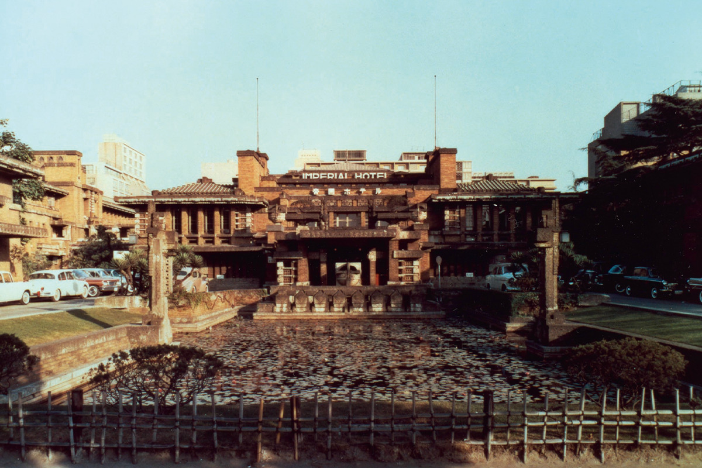
Imperial Hotel Tokyo открылся в 1890 году как парадный дом Японии для иностранных гостей. Первым председателем отеля был Эйити Сибусава, а второе его здание построил Фрэнк Ллойд Райт.
История
Отель по просьбе правительства
В 1890 году правительство эпохи Мэйдзи торопило страну навстречу Западу, и ему нужен был отель, где можно достойно принять иностранных гостей. На эту просьбу откликнулись самые известные предприниматели того времени. Среди учредителей были Эйити Сибусава, Кихатиро Окура и основатель торгового дома «Мицуи Буссан», а деньги вложили министерство императорского двора и крупнейшие финансовые дома.
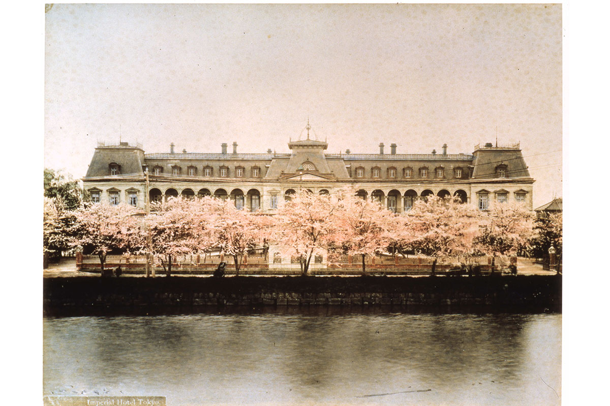
Эйити Сибусава (1840–1931) вошёл в историю как «отец японского капитализма». Его портрет выбрали для новой купюры в 10 000 иен. Отелем он руководил 19 лет с самого открытия и был его первым председателем. Кихатиро Окура (1837–1928), предприниматель и основатель фонда Окуры, стал вторым председателем.
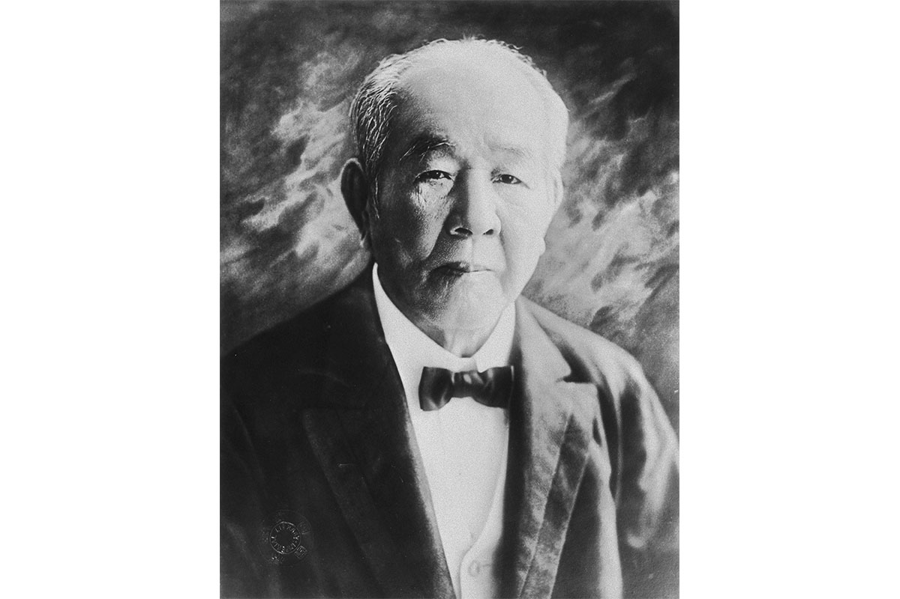
Главным правилом Сибусавы было «отвечать на запросы общества и служить ему». Это и есть дух, с которым создавался отель, и его нынешние принципы звучат в том же ключе: отель хочет быть лучшим в стране и в мире и вносить вклад в развитие международного сообщества, в спокойную и достойную жизнь людей и в их культуру.
Слова
Что Сибусава сказал гостям и служащим
На церемонии открытия в 1890 году губернатор Токио поздравил отель и сказал, что гостиница показывает, каковы настроения и культура страны. Сибусава ответил:
«Здание, обстановка и утварь у нас не самые роскошные, но принять несколько сотен гостей нам по силам. Посуда не изысканная, но если гость попросит, мы достанем для него что угодно со всего света. В этом мы видим свою роль и здесь не уступим. Если сегодня нам ещё не хватает сил, обещаю, что очень скоро нам не будет стыдно. Просим вашего расположения»
Эйити Сибусава, 1890 год
Уже оставив пост председателя, он однажды пришёл в отель и обратился к служащим:
«Встречать и провожать гостей из разных стран, с разными обычаями, это тяжёлый труд. Но если вы будете внимательны и заботливы, люди, которые съезжаются со всего мира и разъезжаются по всем его уголкам, увезут с собой память о Японии и будут вспоминать её с теплом всю жизнь. Для страны это очень важная работа. Старайтесь»
Эйити Сибусава
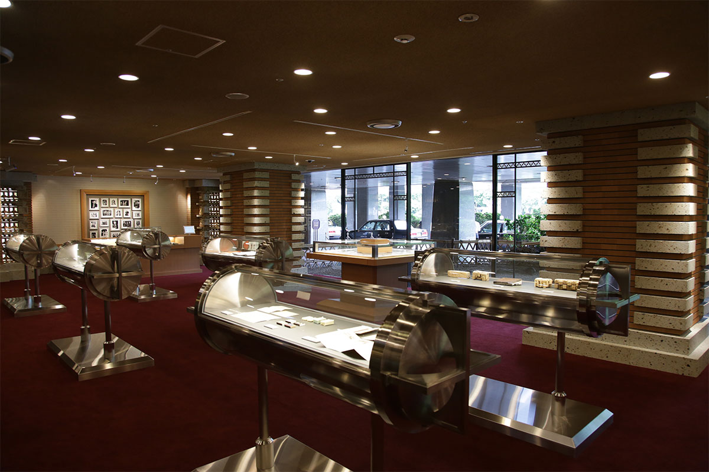
С февраля 2021 по январь 2022 года в Imperial Times, выставочном зале в главном лобби, шла бесплатная выставка о Сибусаве и отеле. В 2023 году там же показывали выставку к столетию здания Райта.
Бюст
Подарок от служащих
На территории отеля стоит бюст Сибусавы. Его сделали в 1925 году, когда Сибусаве было 86 лет, через 16 лет после его ухода с поста. Бюсты Сибусавы и Кихатиро Окуры заказали сами служащие отеля в знак уважения к обоим основателям.
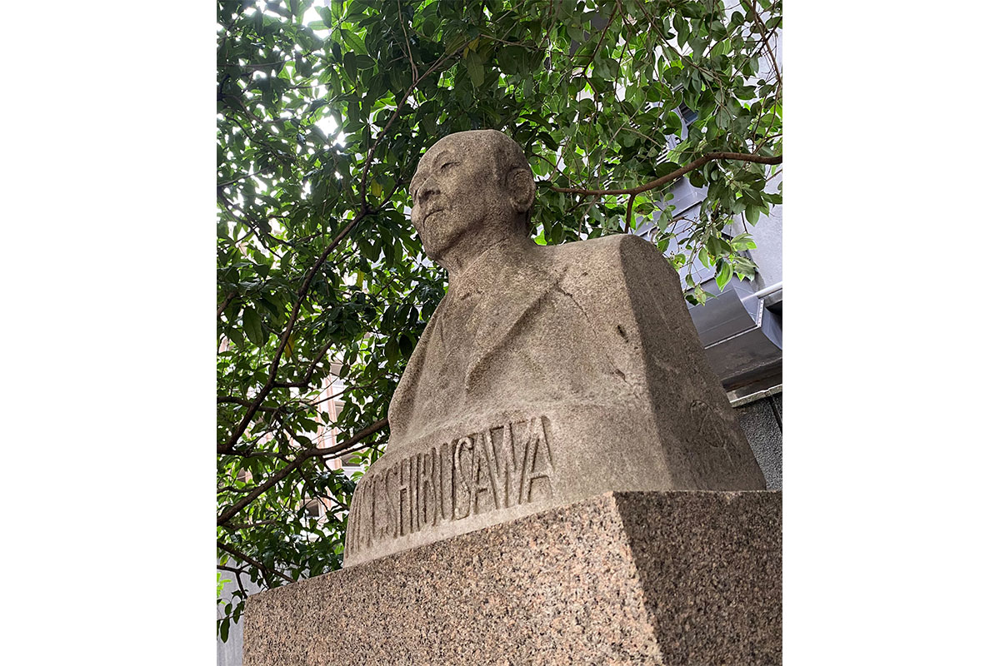
Сначала оба бюста стояли во внутренних дворах второго главного корпуса, открытого в 1923 году: один в южном, другой в северном, по обе стороны от большого обеденного зала в центре здания. В 1970 году, когда достроили нынешний главный корпус, бюст перенесли туда, где он стоит и в 2026 году.
Архитектура
Райт и «Жемчужина Востока»
Второй главный корпус открылся в 1923 году, и все звали его просто «зданием Райта». Фрэнк Ллойд Райт (1867–1959), архитектор из американского штата Висконсин, вместе с Ле Корбюзье и Мисом ван дер Роэ считается одним из трёх великих мастеров архитектуры модернизма. Он собирал гравюры укиё-э, и первой его поездкой за границу стала поездка в Японию. В 1916 году проект ему заказал Айсаку Хаяси (1873–1951), первый японец на посту управляющего отелем. Познакомились они в Нью-Йорке, и сблизило их японское искусство.
Отель Райта прозвали «Жемчужиной Востока», его хвалили и в Японии, и за рубежом. Низкое симметричное здание с тяжёлыми объёмами, где переплетаются западные и восточные мотивы, восхищает людей до сих пор. Пруд перед фасадом и симметрия, как считают, связаны и с павильоном «Хоодэн», который Япония показала на Всемирной выставке в Чикаго: он повторял зал Феникса храма Бёдо-ин.
По словам историка архитектуры, профессора Вашингтонского университета, Райт открыл для себя японскую культуру около 1893 года, во время той самой Чикагской выставки.
«В 1905 году он путешествовал по всей Японии. Похоже, японские пейзажи и сады сильно на него повлияли, и это отразилось в проекте отеля. Строили по почти 800 чертежам, среди которых были огромные рисунки тушью на льняном полотне, привезённые из Америки»
историк архитектуры
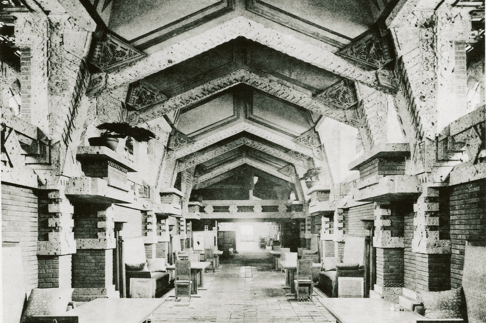
Райт сам руководил стройкой. Старинная японская система мер давалась ему с трудом, но мастерство японских строителей его поразило, и он относился к ним с большим уважением. Материалы он брал местные: камень оя из префектуры Тотиги и рельефную «царапанную» плитку, которую делали в Токонамэ в префектуре Айти. Без чувства красоты Райта, без японских материалов и рук мастеров такое пространство не появилось бы.
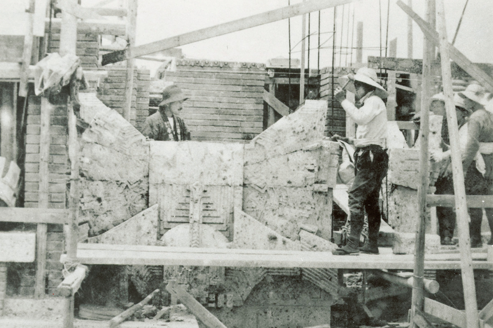
Камень оя стал символом здания Райта, а после этого широко разошёлся как строительный материал.
Город
Отель как маленький город
«Райт думал не только о самом здании. Рядом зелень парка Хибия, рядом Императорский дворец, и он понимал, какую роль отель играет в городе. Это место, где принимают гостей из-за границы, но не только: он видел отель местом встреч, где пересекаются люди из Японии и других стран»
историк архитектуры
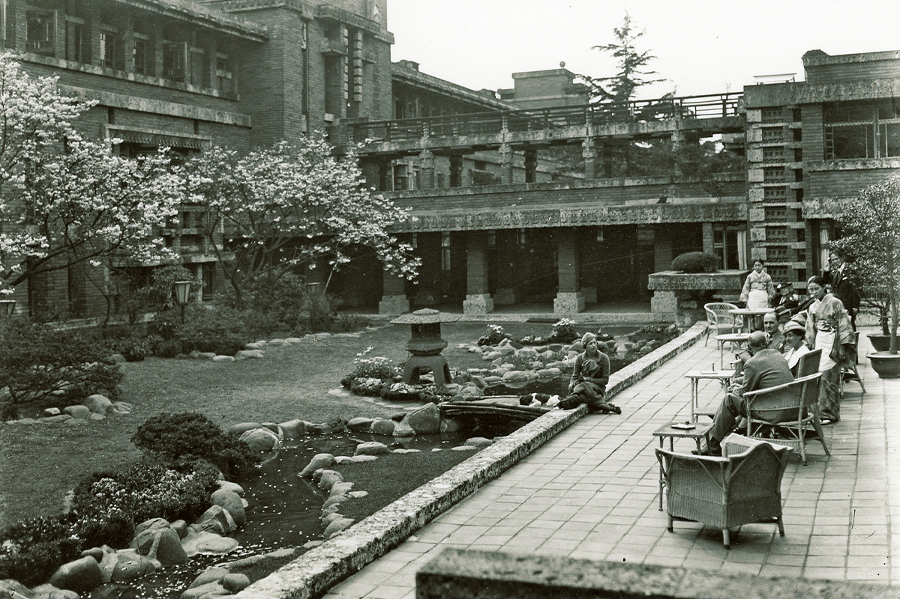
Почти половину площади Райт отдал не номерам, а общим пространствам: театральному залу, ресторанам, дворам. Для своего времени это было смело. Торговый ряд отеля первым в Японии назвали «аркадой», в его лавках продавали японские товары, и иностранцы не могли от них оторваться. Летом на крыше показывали кино, и зрители смотрели фильмы с пивом в руках. Отели со множеством залов и магазинов кажутся обычными, но в Японии того времени такого ещё не было. Здание с его орнаментом дарило особое чувство: вроде бы Япония, а вроде бы и нет.
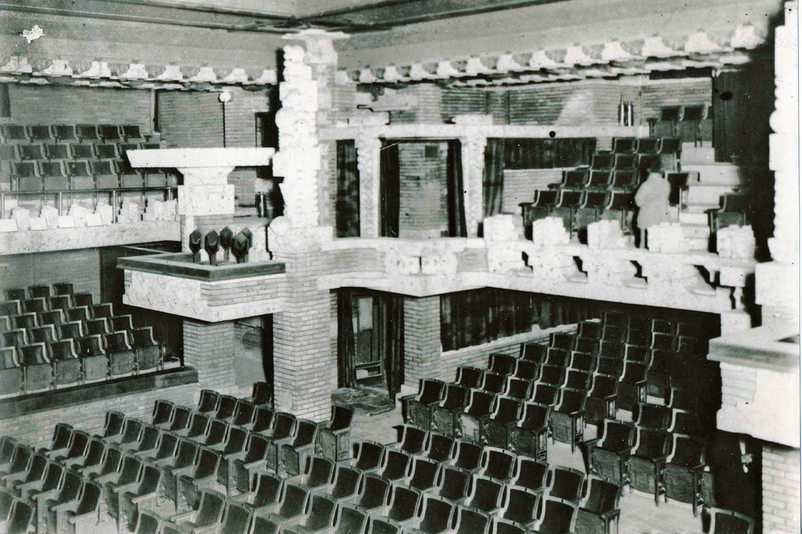
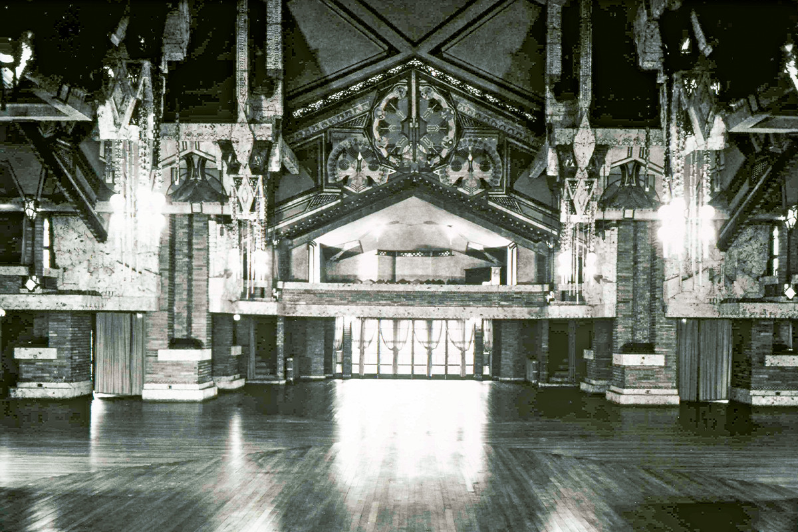
Многое из того, что в японских отелях дарит гостю ощущение праздника, началось в Imperial Hotel и расцвело в здании Райта.
Сегодня
Отель у парка Хибия
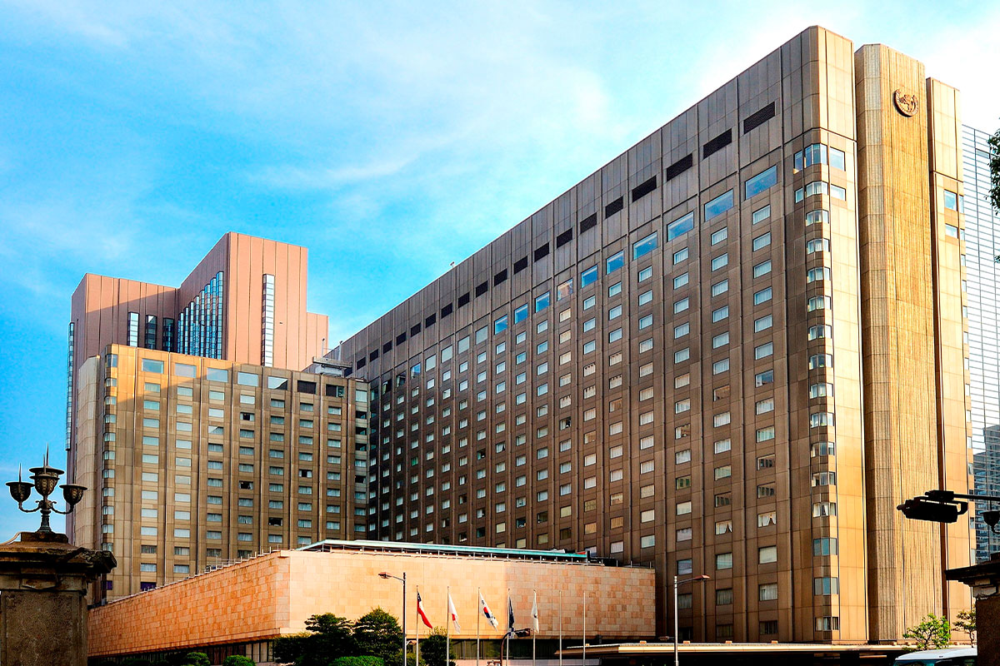
Нынешний главный корпус достроили в 1970 году. В 2023 году, к столетию здания Райта, отель предлагал проживание в сюите Frank Lloyd Wright Suite с памятным коктейлем в баре Old Imperial Bar. Корпус Tower отель закрыл в 2024 году под перестройку, а главный корпус в 2026 году продолжает работать.
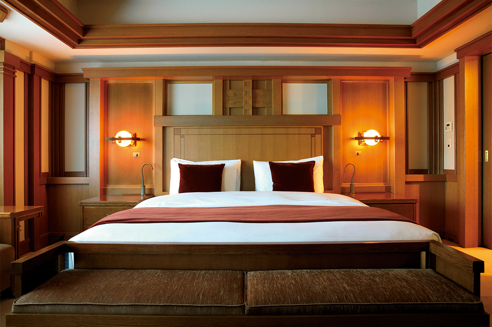
Imperial Hotel Tokyo
- Адрес
- Токио, Тиёда, Утисайвайтё, 1-1-1
- Телефон
- +81 3-3504-1111
- Номера
- 570
- Цены / Вход
- от 126 500 иен за ночь (с налогом и сервисным сбором, без гостиничного налога)